ARM 汇编
由于开始好好的接触安卓这些东西，所以还是决定把所有的东西从头到尾的好好学习一下，也是开始记录生活的一种方式吧
主要的学习流程大概这两个：
- 看一下周壑老师的视频
- 辅助一下利用 https://azeria-labs.com/ 这个网站上的lab进行学习
ARM 汇编介绍 & 环境搭建
环境需要：Android studio （ 模拟器，ndk交叉编译环境，adb工具 ） ida（ 远程调试 ），keypatch 插件 cemu 做辅助支持 : https://github.com/hugsy/cemu
在ubuntu下面折腾了一下，感觉还行
当然如果有真机做测试使用是最好的了 （ 这里我最后选择的真机，因为机器就在手里，hhhh ）
Android studio & ida 的配置
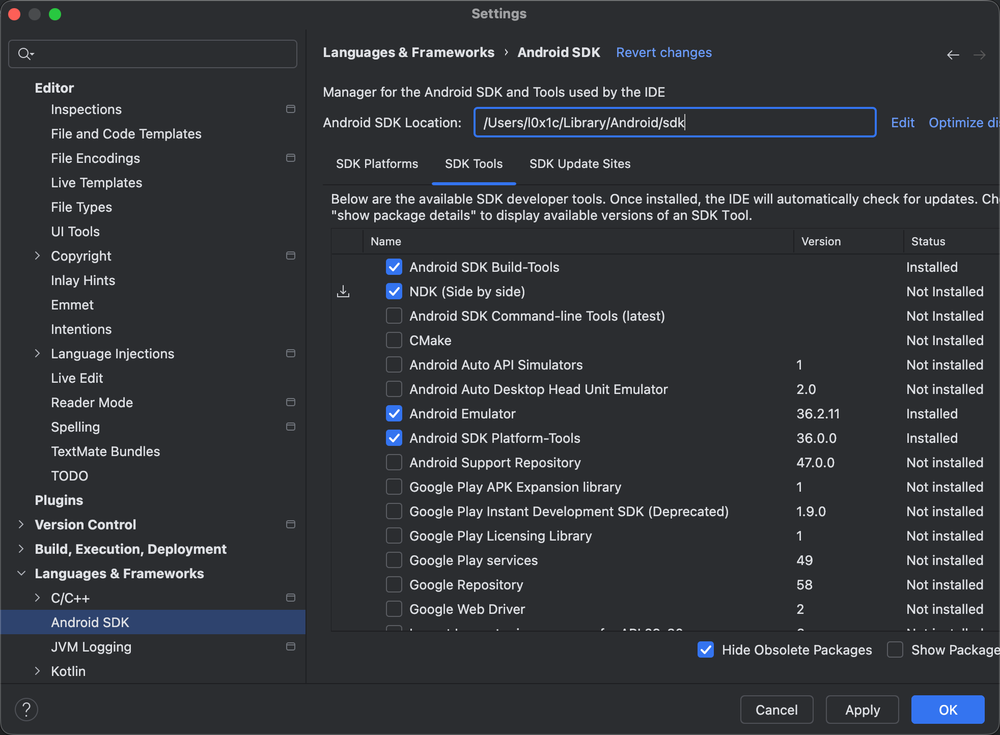
勾选这几个选项即可，下载完会在上面表示的sdk Location的目录下
安装完之后自己在 .zshrc 中配置一下环境变量
export ANDROID_HOME="Android/sdk所在路径"
export PATH=${PATH}:${ANDROID_HOME}/tools
export PATH=${PATH}:${ANDROID_HOME}/platform-tools
export PATH=${PATH}:${ANDROID_HOME}/ndk所在的路径
所需要的东西比如Emulator，ndk这些东西都在这个Location的目录下了
代码的头文件在 toolchains/llvm/prebuilt/darwin-x86_64/sysroot/usr/include 下
进到android studio中里面自带有一个arm64的emu，avd所在的位置 .android/avd/{emu:name}

以后避免每次都打开 android studio可以用emulator里面命令来启动avd

⚠️ 如果我们后面如果调试或者做什么搞坏了，我们可以直接到 snapshots 目录下把下面的文件删除就行，这样就是冷启动了
配置ida调试就是直接把 android的server通过adb丢进去然后启动，配置一下端口的转发
这样后ida attach就可以看到对应的进程那些了

c编译环境
https://developer.android.google.cn/ndk/guides/ndk-build?hl=en
主要需要的是 Application.mk 和 Android.mk 这两个文件，现在写一个c然后编译一下试试
APP_ABI := arm64-v8a
APP_BUILD_SCRIPT := Android.mk
APP_PLATFORM := android-16
LOCAL_PATH := $(call my-dir)
#LOCAL_ARM_MODE := arm
LOCAL_MODULE := hello
LOCAL_SRC_FILES := hello.c
include $(BUILD_EXECUTABLE)
执行 ndk-build NDK_PROJECT_PATH=. NDK_APPLICATION_MK=Application.mk
可以看到已经生成了，一个是debug版本的一个是release版本的，ida这样就可以开始调试起来了

⚠️ 好像mac m1还没办法运行32位的，所以该文章主要都以64位为主，学的时候也是多学一下64位的毕竟是主流 ( 当然也可以先用32位的来做 )
寄存器和指令基本格式
寄存器介绍
找了一台手机可以支持32位的，以及64位的，这样就可以都学一下了
这次就可以32位调试起来了，可以很好看到32位的寄存器
arm32下一共有16个通用寄存器和一个状态寄存器
- 其中r13叫做SP叫做栈指针寄存器相当于x86汇编中的esp
- LR叫做linker指针，当执行函数调用指令 BL func（Branch with Link）时，CPU 会自动把下一条指令的地址（PC + 4）写入 LR，并且跳转到 func 标签执行
函数如果想要返回的话BL func ; lr = pc + 4, 跳转到 func
如果函数内又调用了别的函数，LR 会被覆盖，所以通常编译器会MOV PC, LR ; 回到调用点继续执行STMDB sp!, {LR} ; 保存返回地址 ... LDMIA sp!, {PC} ; 恢复并返回 - PC (Program Counter) 里面存放的是当前的地址，对应x86里的eip
- PSR相当于x86中的eflag寄存器 可以看到arm手册里的介绍
对于PSR (当前程序状态寄存器) 这些位的介绍：
| 位 | 名称 | 含义 | 说明 |
|---|---|---|---|
| N (bit 31) | Negative | 结果为负 | 若算术结果为负，N=1 |
| Z (bit 30) | Zero | 结果为零 | 若结果为 0，Z=1 |
| C (bit 29) | Carry | 进位标志 | 加法进位或减法借位 |
| V (bit 28) | Overflow | 溢出标志 | 有符号运算时溢出 |
ADD r0, r1, r2 ; CPSR.C 被设置为进位标志
SUBS r0, r1, r2 ; 带S的指令会更新 N Z C V 标志
27 位：Q（Saturation flag，饱和标志）
- 用于 饱和运算（Saturating Arithmetic）指令，如 QADD、QDADD
- 当运算结果超出表示范围时，Q=1
- 可用 MSR CPSR_f, #0 或 MRS/MSR 指令清除或读取
26–25 位：IT[7:6]（If-Then 块标志）
- 用于 Thumb 模式的 IT（If-Then）块控制
ITE EQ MOVEQ r0, #1 MOVNE r0, #0 #这时 CPSR 的 IT 位会被硬件自动设置与清空
19–16 位：GE[3:0]（Greater or Equal flags）
- 用于 SIMD（多数据并行）中的比较结果标志（例如 UADD8, USUB8 等）
- 每一位对应 8 位操作结果是否大于等于
9 位：E（Endian bit）现在arm系统几乎都是小端的
- E = 0 → 小端（Little-endian）
- E = 1 → 大端（Big-endian）
5 位：T（Thumb state）
- T = 0 → ARM 模式（32 位指令）
- T = 1 → Thumb 模式（16 位指令）
BX R0 ; 跳转到R0地址，并根据最低位决定T标志 # 如果 R0 的最低位为 1，会自动切换到 Thumb 模式
4–0 位：M[4:0]（处理器模式位）
| 模式位（M4:M0） | 模式名 | 权限 | 说明 |
|---|---|---|---|
10000 |
User | 非特权 | 普通用户态 |
10001 |
FIQ | 特权 | 快速中断 |
10010 |
IRQ | 特权 | 普通中断 |
10011 |
Supervisor (SVC) | 特权 | 系统调用 / 启动模式 |
10111 |
Abort | 特权 | 内存访问异常 |
11011 |
Undefined | 特权 | 未定义指令异常 |
11111 |
System | 特权 | 特殊内核态 |
总体设计和指令规格
arm汇编中没有隐式内存操作指令
这个怎么理解呢？ 可以这么来说，在x86汇编中有很多的隐式内存操作指令，比如push pop call，比如push这个指令，这个指令本身是没有内存的索引地址的，这个指令操作后会隐式的把esp指针的地址-4并且往其中写一个数，那么这个push这个指令就隐式的操作了内存，包括中断指令int 等等
arm汇编中，指令是 0 - 3个操作数，内存操作数和立即数操作数不能同时存在（因为 ARM 是典型的 load–store（取数-运算分离） 架构），内存操作数至多出现1次，寄存器操作数一般都是在前面
这里大概理解了一下为什么内存操作数和立即操作数不能同时存在： 指令位数固定，要同时编码“访存寻址模式 + 数据算术的立即数/移位 + 寄存器号 + 条件码”，位不够用，解码也会变复杂，所以把复杂操作拆成两条简单指令，可以更好的乱序执行，把“访存”和“算术”拆开，硬件解码与执行更规整，单周期（或固定多周期）更容易保证；条件执行也更可控
可以观察看到，左边的都是寄存器操作数，上面看到的LDR R6, [R6,#0xC]这种的属于两个操作数，后面的只是内存的一种索引模式 再比如：MOV.W R7, R9,LSR#12 这也是两个操作数，第二个R9,LSR#12这属于一个操作数
读pc寄存器
在arm的这个汇编的情况中，pc寄存器属于那种正常的寄存器，可以对这个寄存器进行写，那么写到这个寄存器就相当于了指令跳转，写了个例子方便理解，可以看到跳过了地址是8的位置，直接到了c的地址
读取pc寄存器有很多比较奇怪的行为，读取pc寄存器的时候，如果是arm模式会+8，thumb模式+4，因为ARM的流水线是为了性能优化设计的让CPU在执行当前指令的同时，已经把下一条、下下条都装载进指令缓存
| 模式 | 指令长度 | 流水线深度 | 读取 PC 实际值 | 偏移原因 |
|---|---|---|---|---|
| ARM 模式 | 4 字节 | 提前取两条 | 当前地址 + 8 | 三段流水线取指超前 |
| Thumb 模式 | 2 字节 | 提前取一条 | 当前地址 + 4 | 指令短、取指周期短 |
ldr的指令读pc的内存也同理，可以看到后面的pc读取的数据pc被+8，然后读取8位置的值，所以pc寄存器只要有读的指令存在就是读的就是pc+8
这里说一个问题就是ldr r0,[pc, #-4]

但是比如你在ida调试那些环境下，那么读的就不是这个值了
这里加一个小trips (关于ida安装keypatch): 这里我用了高版本的ida9.0，keypatch不支持：https://bbs.kanxue.com/thread-286591.htm#msg_header_h3_4
编译之前看一下自己ida的架构，然后编译的keystone的dylib要对应上
就可以用了
继续回到主题！调试环境下的为什么不是这个值，我们看一下 这里我写的是 ldr r0, [pc, #-4]，ida帮我们优化了一下可以直接看到地址，之前说的pc寄存器遇见读的指令pc在arm模式下会+8，由于我-4了，所以应该是pc+4，读到的值r0应该是912fff1e
我们现在看一下，读取到底是什么值，可以看到读取的是E7F001F0，这个是什么呢，我在下面硬编码改了一下，发现时UND #10，这个是什么？！

网上查了一下，这个值都和反调试有关系，那么可以理解为，这里相当于读的断点的中断指令，类似于x86中f8的int 3，相当于单步的时候会有一个信号，信号呢被调试器捕获，然后ida捕获到异常，然后进行处理
thumb模式下：
先看第一个指令ldr r0,[pc] 这个在thumb模式下是pc + 4的地址读取出来
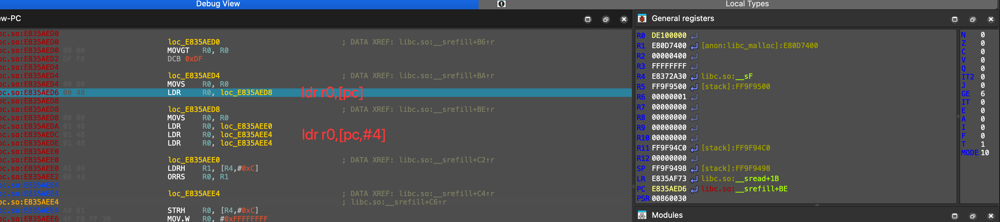
可以看到又读了一个中断 DE10
但是这里有疑问了，不是pc+4吗，继续往下看下面的两个都是e4的那个，就可以知道了，其实是有地址对齐的问题存在，所以才会两个条指令都是相同的pc+4但是对应的地址是一样的情况，所以thumb模式下还需要对齐，可以总结规律thumb模式下ldr reg,[pc]的pc地址是要 pc - pc % 4

看一下公式准不准确用上面的d6的地址做一下对应的计算，可以看到是d8
这种的东西在arm模式下不考虑，因为arm模式下都是4字节的，所以都是对齐的情况
条件和标志位响应
Trips:（大部分的指令的说明都在arm手册的F5.1 以及 C6.2下）可以自己没事的时候看看
上面的图代表了arm中的条件标志位的一些标识，比如如果相等就是EQ那么z就等于1这些，上面的这些助记符扩展都可以加入一些指令后面，比如 addeq r0, r0, #1 那么这句的含义就是当z=1的时候r0 = r0 + 1
让这些标志位进行改变的，举例大概有cmp，或者是某些指令加了后面加了s的，因为加了s就可以把指令影响的标志寄存器进行改，用add进行举例可以看到，adds如果reg不是pc，他会更新psr中的标志位的
直接写汇编调试一下运行看看，写的是add r0,r0,r1 r0 = 1 r1 = 0xffffffff，是进位的，但是add指令是不改变标志寄存器只改变结果，所以没有看到
现在我变成adds可以看一下，可以看到改表了标志寄存器的值，发生了进位和为0，所以c位和z位变成了1
查看手册可以发现上面说的第20位为S位，如果是1就是adds，如果是0那么就是add
01 00 80 E0 ADD R0, R0, R1
01 00 90 E0 ADDS R0, R0, R1
0000 0001 0000 0000 1000 0000 1110 0000
0000 0001 0000 0000 1001 0000 1110 0000
其中有一个和x86相反的规则是减法指令，可以看一下，第一个sub r0,r0,r1 其中的r0 = 0, r1 = 0xffffffff，第二个r0 = 2，r1 = 1
可以看到结果对了，但是c位没有变成1，但是第二个的时候c位变成了1

这个位置就和之前x86学习汇编有一点不一样的情况，这里的情况是产生借位c是0，不产生借位c是0，规则就是减法就是加法器a−b=a+(∼b+1)
这边有几个对应的指令
sub subs cmp
add adds cmn
如果想判断哪些指令有没有更新标志寄存器，你只需要看第20位是不是1，或者第五个十六进制是不是奇数就行，我在libc中随便找的一个函数，可以看到第五个如果是奇数的话，那么就是会改变psr寄存器的
MOV指令
mov指令没有访存的操作，所以两个操作数要不就是reg要不就是imm
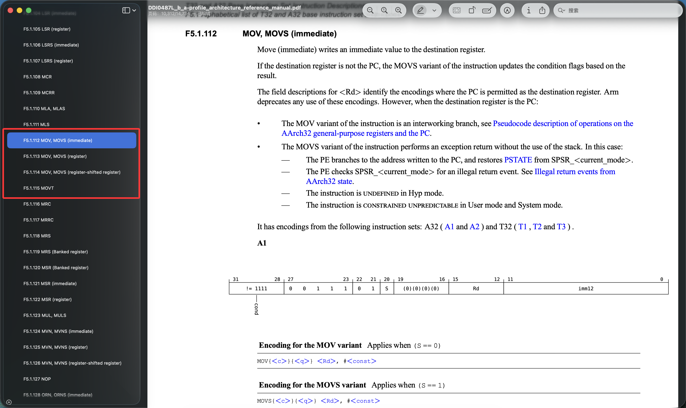
mov,movs (immediate)
因为arm的指令集是4字节的指令，立即数如果是32位的肯定放不下，所以arm的imm没办法直接写32位的立即数，mov立即数的情况手册中分成了两种指令格式一种是A1，一种是A2
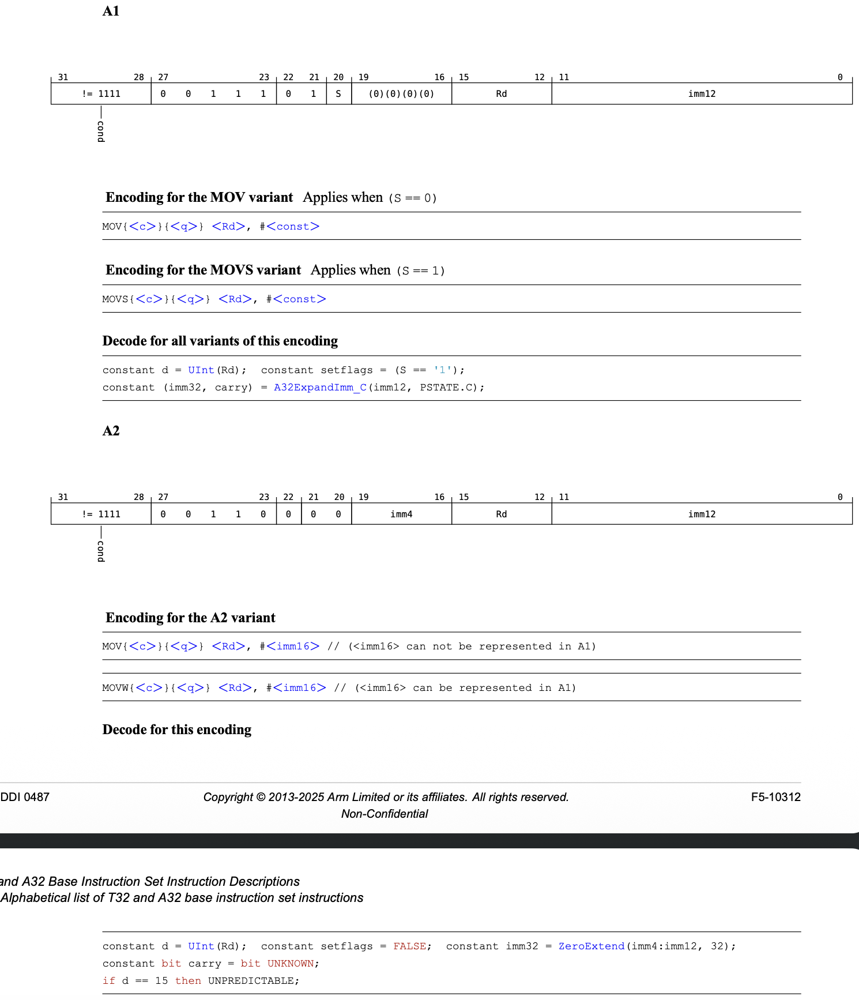
A2编码格式
先看一下A2的指令格式，上面有写到，A2的指令格式支持所有16位的立即数，这16位的立即数会写在0-11为以及16-19位，其中的12-15位代表了寄存器正好是4位代表了16个寄存器
举个例子 mov r1, #0x1234 对应的硬编码是E3011234，那么正好就是0-11为234，16-19为1，12-15为1，正好和上面对应上了
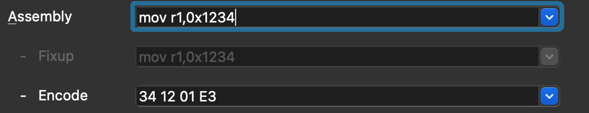
A1编码格式
比如这个指令：mov r1, #0x80000000，这个立即数已经超过了16位的范围，是32位的范围，那么这种情况就是对应的A1编码格式的情况，为什么要这么设计呢？
虽然他比16位大，但是他的有效位只有最开始那一位

这个硬编码根据A1拆分，0-11位是102，12-15的rd为1不变，16-19是0
上面的解释是A32ExpandImm_C(imm12, PSTATE.C)，imm12需要拆成rot = imm12[11:8]，以及imm8 = imm12[7:0]，其中的rot的单位为2，所以上面的102可以为 02像右循环移为2，因为是32位02为10，像右循环移位2就是1（31个0），所以就是0x80000000，那么说明这个就可以表示0x0 - 0xff的情况都可以像右循环移位，移动的位数是0-16，为什么要乘2，那么就可以覆盖32位，那么就覆盖了0-32位的偶数
movt
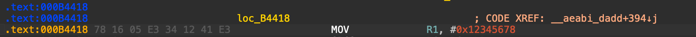
movt是像高4位写，如果像写32位的可以这么写
mov r1,#0x5678
movt r1,#0x1234
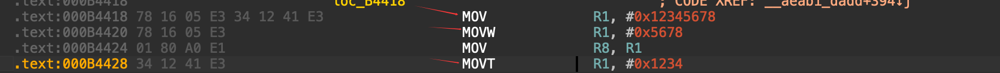
ida优化就直接合并成了一条指令，这个movt的指令一定是先写mov后写movt，因为mov指令会把前面的4字节变成0，那么先写movt就没用了
那么在实际代码中编译器怎么写的这个情况呢，可以看一下
#include <stdio.h>
int main() {
u_int32_t test_var = 0x12345678;
printf("Test variable value: 0x%X\n", test_var);
while (1)
{
printf("Hello, World!\n");
getchar();
}
return 0;
}
可以看到真实的环境下的寻址，都是通过ldr的这种方式去寻址的，movt这种一般是后面写shellcode的时候比较有用处
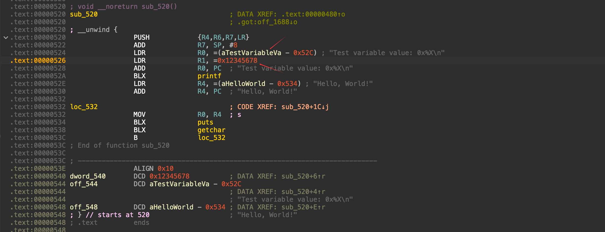
mov,movs (register)
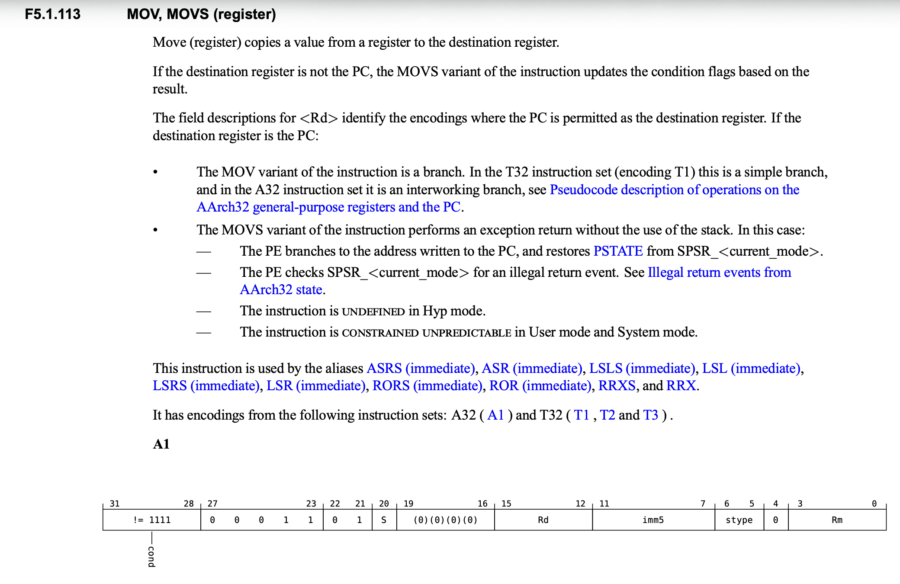
这个普通的mov reg,reg肯定都比较了解了，其中的0-3位为源寄存器，12-15为目标寄存器，举例中的这个mov r0,r1，其中r1就是0-3位为1，r0就是12-15位为0
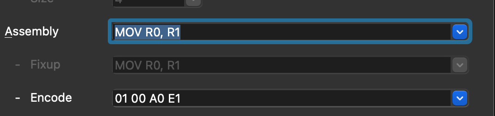
这个上面的图中的imm5就代表了可以进行移位的数字，可以看到是7-11位，一共是5位，5位就是代表了0-31，就是32个数字，也对应了32位
下面这个例子就是左移1位，怎么移就要看5-6位的stype位了，因为有两位所以对应了四种情况：逻辑左移，逻辑右移，算数右移，循环移位 （没有算数左移，因为这个是和逻辑左移式一样的）
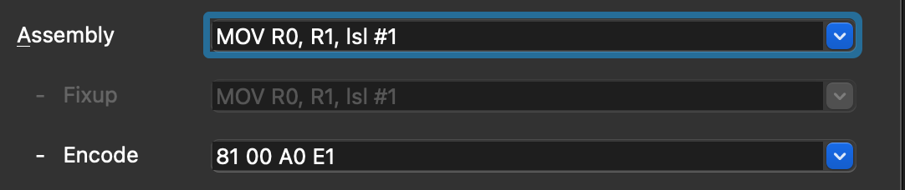
在看一下移位的汇编，其实和mov的硬编码是一样的，因为他们的原理等价了mov的东西，其实移位的操作可以理解为是mov指令的一个宏定义
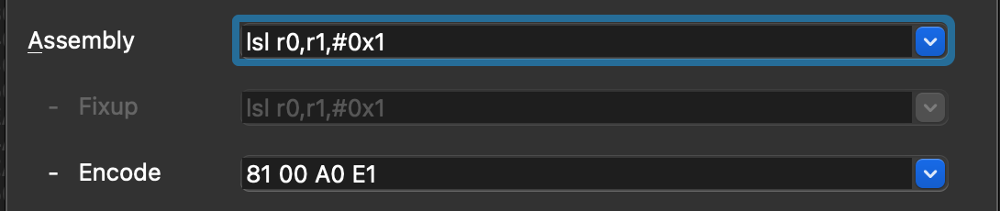
mov,movs (register-shifted register)
这个是寄存器移位寄存器赋值给寄存器，所以和上面的大概的流程是一样的不重复了

基本整型运算
基本运算基本不会出现两个imm，因为举个例子，比如 add r0,1,2 相当于r0 = 3，这个写出来就很奇怪了，早就在编译器的那一步就给你优化掉了
像这种基本整形运算其实大部分都一样，格式所以主要以add来举例说明，后面的简单介绍功能就可以
ADD
见到这种12位的imm，其实本质上都是之前说的mov的那种形式 8位代表数字，4位代表移位
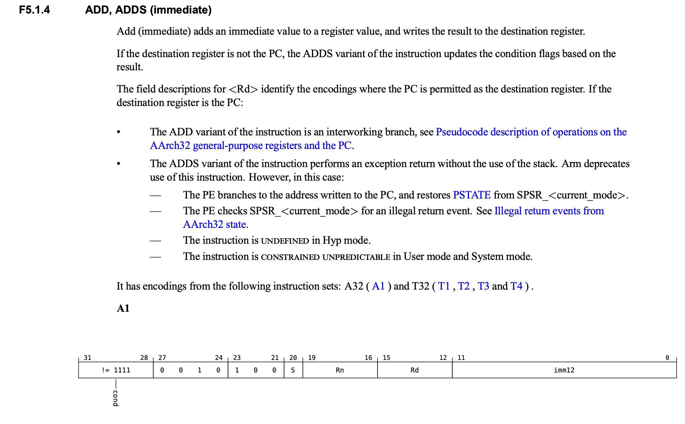
寄存器的就比较简单了，两个寄存器想加写在第三个寄存器里，其中的imm5和stype就是之前mov中的说的移位操作

这个就也和上面的mov类似就是寄存器移位寄存器
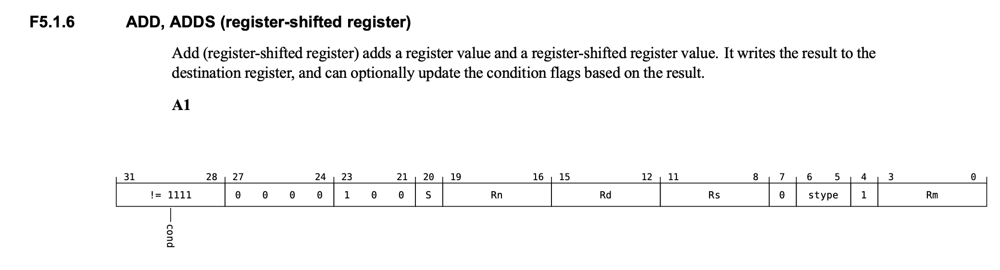
这个就是pc+imm给到另一个寄存器了
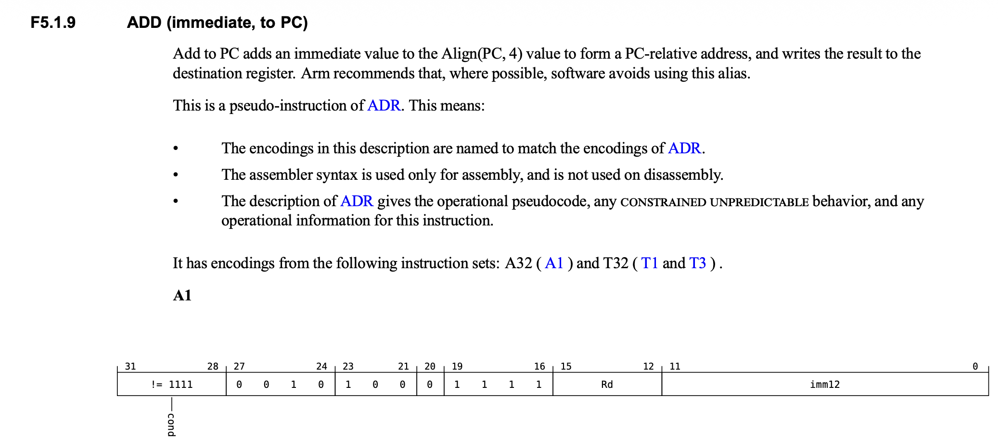
看一下汇编 add r0,pc,4
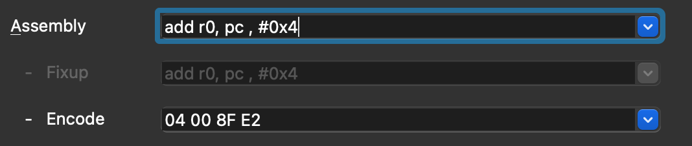
ida中对应什么呢，因为pc进行读就需要当前的pc+8，上面的指令加上4，所以就是2c的位置，但是在正常的调试环境中，或者运行环境中会根据imagebase进行调整可以在这里看一下printf的位置的这个情况
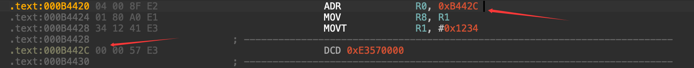
printf这个情况，可以看到他把imagebase加上去了
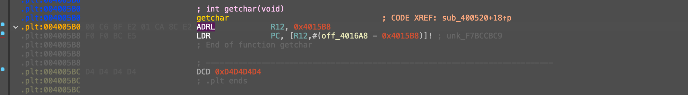
SUB/CMP
减法操作 SUB Rd, Rn, Op2：Rd = Rn - Op2 CMP Rn, Op2：只比较不写寄存器，等价于 SUBS (丢弃结果)
; i--，并在为零时跳走
SUBS r0, r0, #1
BEQ don
; 比较 a 与 b
CMP r1, r2 ; 相当于 SUBS r?, r1, r2
BGE ge_path ; 大于等于走这里（无借位 + 非溢出）
RSB
反减 RSB Rd, Rn, Op2：Rd = Op2 - Rn
; 取负：Rd = -Rm
RSBS r0, r1, #0 ; r0 = 0 - r1，顺带写标志
AND/TST
与操作 AND Rd, Rn, Op2：Rd = Rn & Op2 TST Rn, Op2：与运算并只写标志，等价于 ANDS (丢弃结果)
; 测试 r0 的 bit 7 是否为 1
TST r0, #(1<<7)
BNE bit7_is_one
BIC
反与，按位清零 BIC Rd, Rn, Op2：Rd = Rn & ~Op2
; 清 r0 的低 4 位
BIC r0, r0, #0xF
; 清 r1 的 bit 20（把 bit20 置 0）
BIC r1, r1, #(1<<20)
ORR
或 ORR Rd, Rn, Op2：Rd = Rn | Op2
; 置 r0 的 bit 3 和 bit 5
ORR r0, r0, #(1<<3) | (1<<5)
EOR/TEQ
异或 EOR Rd, Rn, Op2：Rd = Rn ^ Op2（按位异或/翻转） TEQ Rn, Op2：只写标志，等价于 EORS (丢弃结果)，常用来“测试相等性（按位相同则结果 0）”或“测试奇偶”
; 翻转 r0 的 bit 8
EOR r0, r0, #(1<<8)
; 判断 r1 与 r2 的比特是否完全相同
TEQ r1, r2
BEQ equal_bits ; r1 ^ r2 == 0